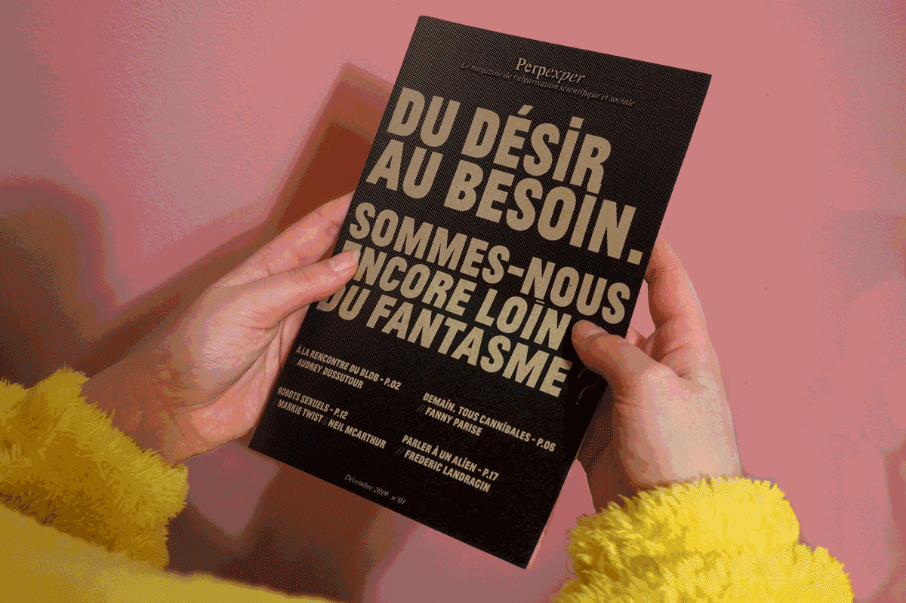
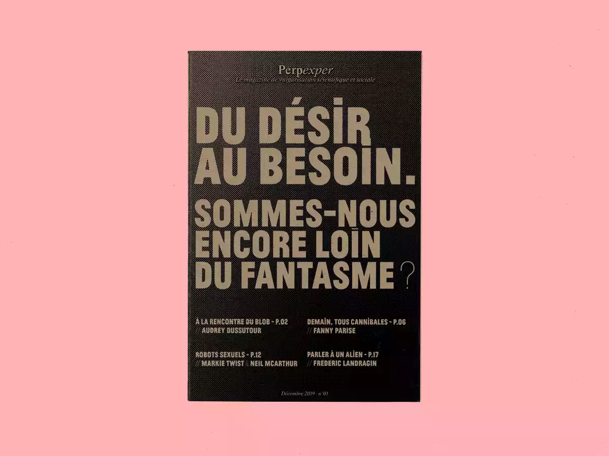
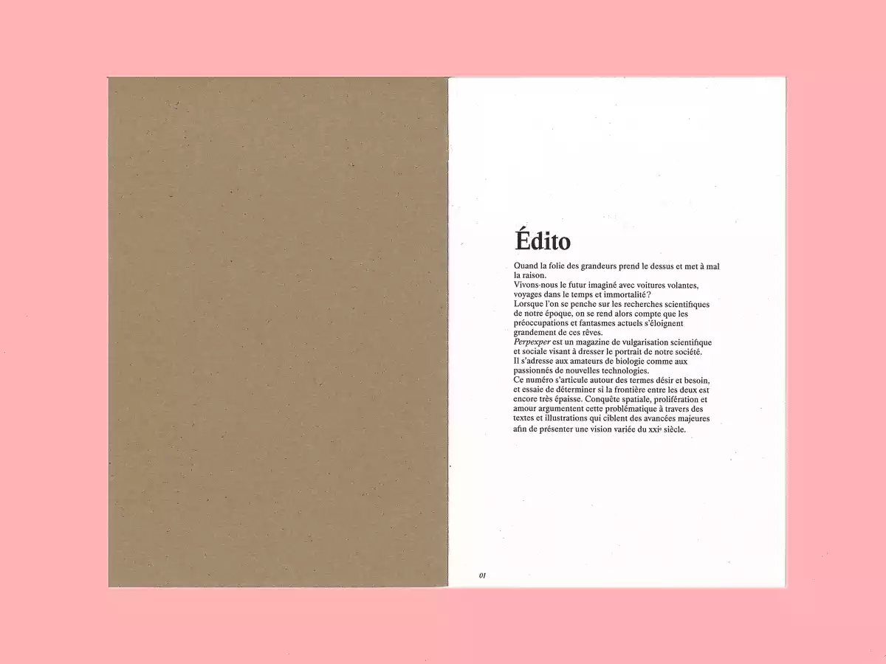
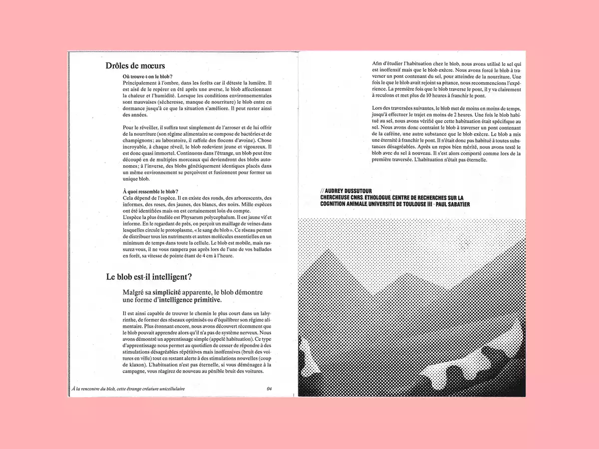
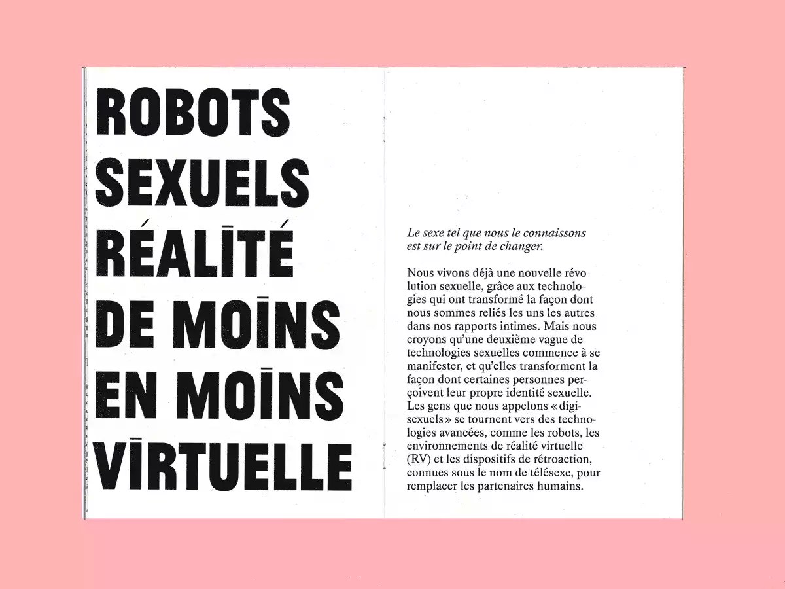
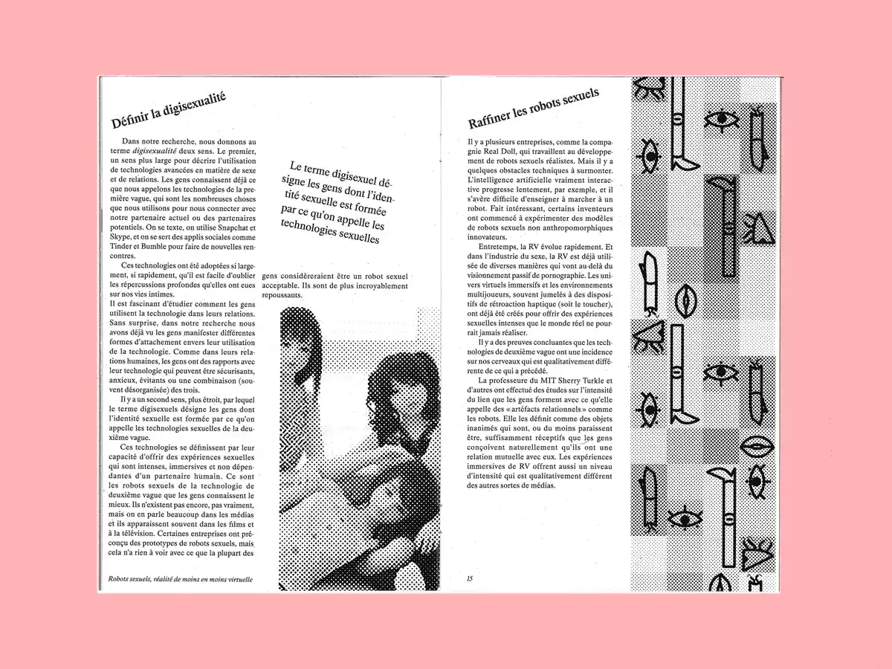
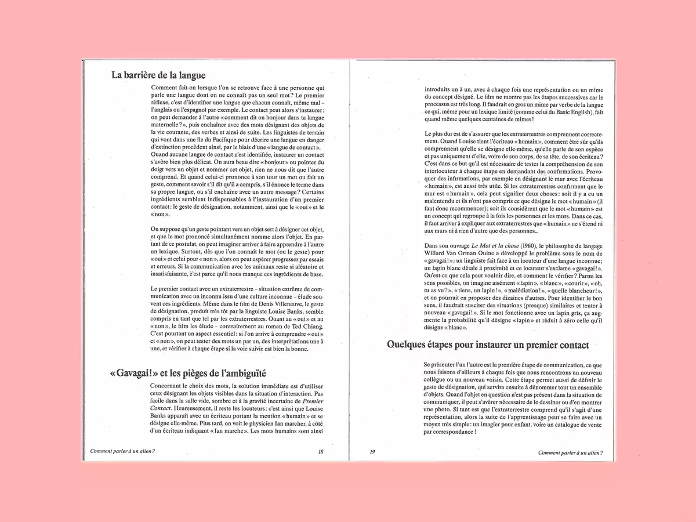

Perpexper
Design éditorial
Magazine typographique de vulgarisation scientifique et sociale. Il utilise les codes des tabloïds (titres chocs, jeu de graisse, gros titres) pour montrer des sujets d'apparence absurde, pour ensuite contraster avec des articles scientifiques très rigoureux.






